PSY6422 - Data Management & Visualisation
Introduction to ggplot2
Attendance Check-In Code
Enter the attendance code for today’s seminar to log your attendance.
You can log your attendance on iSheffield
From Base R to ggplot2
Base R:
- Fast and convenient for quick data exploration
- Fundamental to R and doesn’t require extra packages
- Built on a “pen and paper” model: you draw a plot, then add elements to it
ggplot2:
- Powerful and flexible system for creating beautiful, publication-quality graphics
- Requires the
tidyversepackage. - Based on the Grammar of Graphics
What is the Grammar of Graphics?
A set of rules for building statistical plots layer by layer.
A plot is not a single object, but rather a combination of independent components:
- Data: The dataset you’re using.
- Aesthetic Mappings: How variables in your data are mapped to visual properties (e.g.,
xposition,yposition,color,size). - Geometric Objects: The shapes you use to represent the data (e.g.,
points,lines,bars). - Statistical Transformations: Calculations on the data (e.g., a histogram’s counts, a box plot’s quartiles).
- Scales: The range of the axes and colours.
- Coordinate System: The space the plot lives in (e.g., Cartesian, polar).
- Facets: How you split the data into subplots based on a variable.
The ggplot2 Template
Every ggplot2 plot follows this core structure:
ggplot(data = your_data_frame, mapping = aes(x = variable_x, y = variable_y)) + geom_type()
You’ll always start with ggplot() to define the data and the main aesthetic mappings.
ggplot()is like the blank canvasaes()(short for “aesthetics”) is where you tellggplotwhich variables go where- You then add layers using the
+operator
The + Operator
ggplot2 is built on layers. You add them one at a time using the + operator.
- The base
ggplot()call is the first layer geom_*()functions are layers that add the visual representation (points, lines, bars)labs()adds labels and titlestheme_*()changes the overall appearance
This layering approach is what makes ggplot2 so powerful and flexible.
Some Examples
Follow Along
For today’s lecture, follow along using the shell script on Blackboard entitled Week3_Part2_ClassShell.R.
Example: mtcars
We will use the mtcars dataset again. We will start by loading tidyverse (ggplot2 is within tidyverse), clearing our workspace, and loading the data.
ggplot2 Scatter Plot
Let’s create a scatter plot looking at miles per gallon (mpg) and horsepower (hp).
ggplot2 Scatter Plot
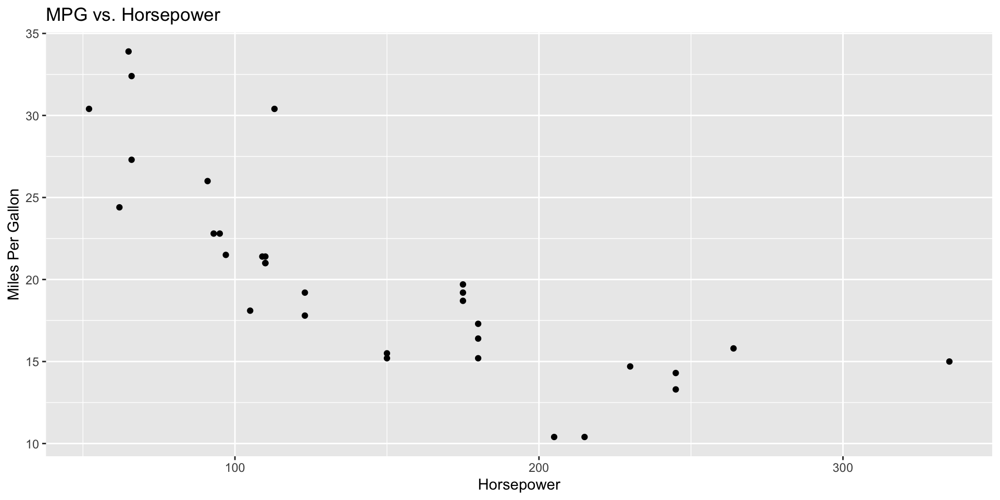
ggplot2 Scatter Plot
We start by calling ggplot(). We specify our data and our aesthetic mappings.
ggplot2 Scatter Plot
Next, we add a layer with geom_point(). This tells ggplot2 to represent each data point as a scatter plot point.
ggplot2 Scatter Plot
We use labs() to give our plot a title and labels for the axes.
ggplot2 Scatter Plot
We can easily add a regression line, just like we did in Base R. The geom_smooth() function adds a smoothing layer.
ggplot2 Scatter Plot
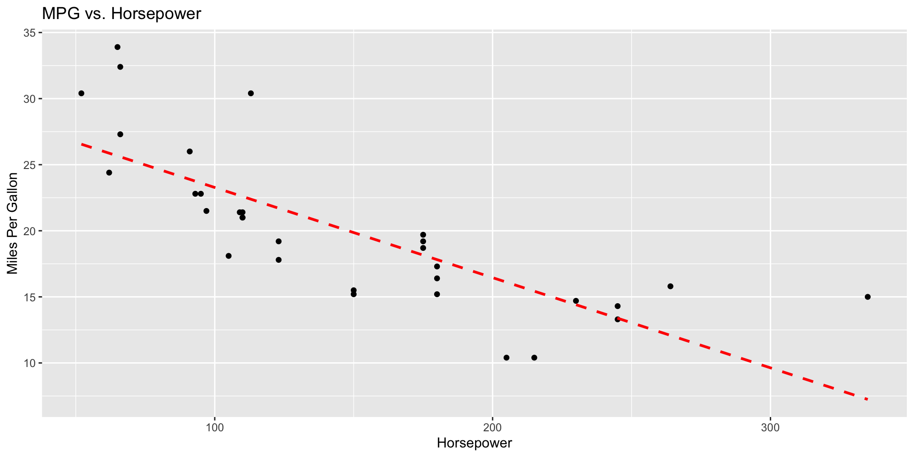
ggplot2 Histogram
Let’s create a histogram looking at miles per gallon (mpg).
ggplot2 Histogram
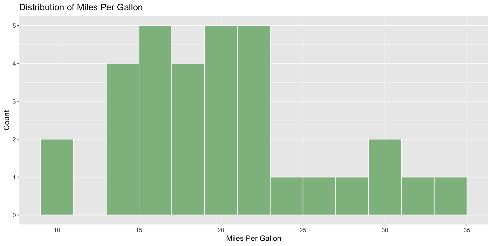
ggplot2 Histogram
We start by calling ggplot(). We specify our data and our aesthetic mappings.
ggplot2 Histogram
Next, we add a layer with geom_histogram(). Here, we can set the bin width (breaks), the colour of the bars (fill) and the colour of the border (color)
ggplot2 Histogram
We use labs() to give our plot a title and labels for the axes.
ggplot2 Histogram

ggplot2 Box Plots
Let’s create a box plot to compare miles per gallon (mpg) across different number of cylinders (cyl).
ggplot2 Box Plots

ggplot2 Box Plots
First we need to convert our numeric cyl variable to a factor.
ggplot2 Box Plots
For our plot, we start by calling ggplot(). We specify our data and our aesthetic mappings. Notice we are specifying the number of cylinders as our fill.
ggplot2 Box Plots
Next, we add a layer with geom_boxplot(). We don’t need to specify anything here.
ggplot2 Box Plots
We use labs() to give our plot a title and labels for the axes.
ggplot2 Box Plots
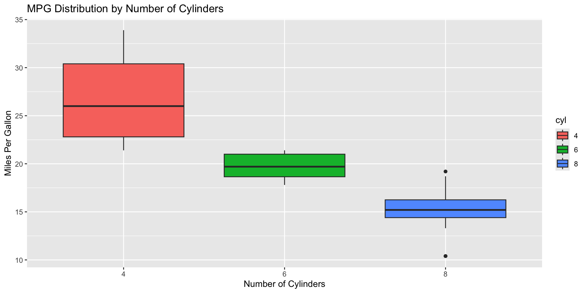
ggplot2 Bar Plots - Counts vs. Summaries
A common point of confusion is when to use geom_bar() vs. geom_col().
geom_bar(): Use this when you want to plot the count of a categorical variable. It automatically performs the counting.geom_col(): Use this when you have a pre-calculated summary statistic (like a mean or sum). It requires both anxand ayaesthetic.
ggplot2 Bar Plots - Counts vs. Summaries
If we want to visualise the number of cars for each cylinder type (cyl), we would use geom_bar(). We would only need to provide the x aesthetic.
ggplot2 Bar Plots - Counts vs. Summaries
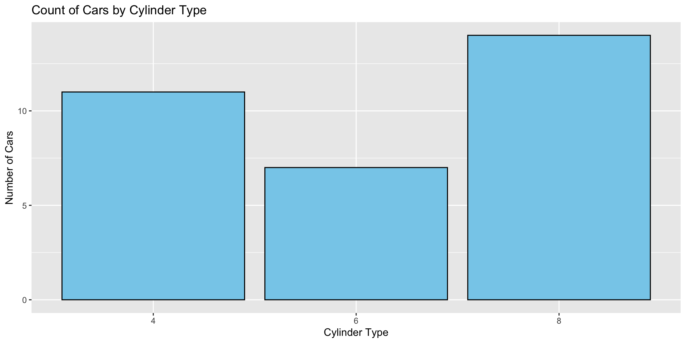
ggplot2 Bar Plots - Counts vs. Summaries
If we want to visualise the average horsepower for each cylinder type (cyl), we would first calculate the mean and then pass both x and y aesthetics to geom_col()
ggplot2 Bar Plots - Counts vs. Summaries
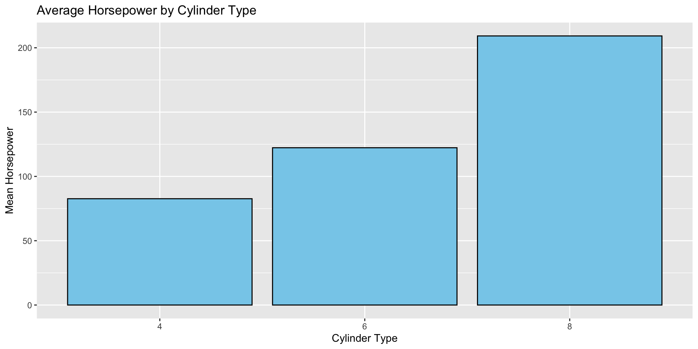
Adding Customisations & New Layers
Customising Colours and Shapes
You can map variables to aesthetics like colour, shape, or size directly inside aes().
Customising Colours and Shapes
Returning to our scatter plot, by placing color = cyl inside aes(), ggplot2 will automatically assigns a different colour to each value of cyl and create a legend.
Customising Colours and Shapes
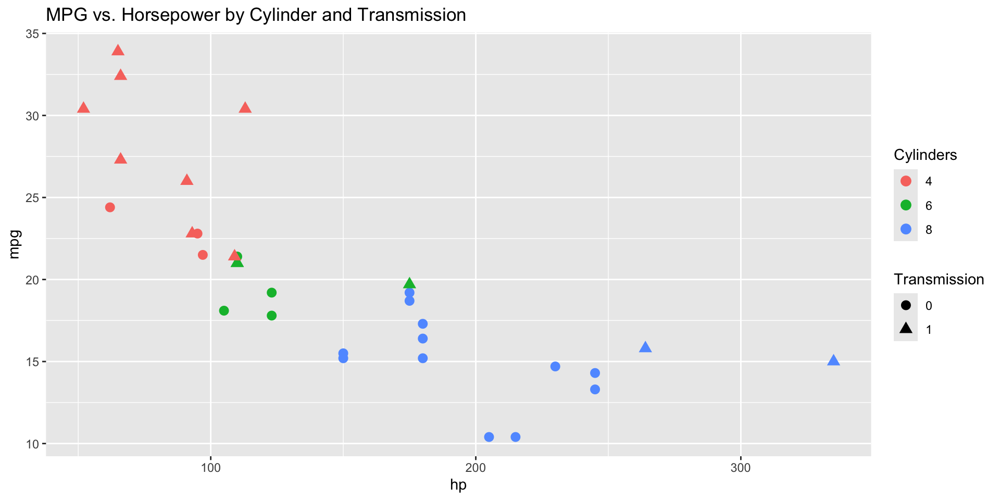
Customising Colours and Shapes
Notice that we need to make cyl and am into factors. color and shape in aes() only work for grouped variables (i.e., factors).
Faceting: Small Multiples
A strength of ggplot2 is its ability to create small multiples, or subplots, for different categories. This is called faceting.
facet_wrap()creates a series of plots that wrap to fill the space.facet_grid()creates a grid of plots, allowing you to split by two variables.
ggplot2 facet_wrap()
Suppose we want to produce a separate scatter plot for each cylinder type. We can specify facet_wrap(~cyl).
ggplot2 facet_wrap()
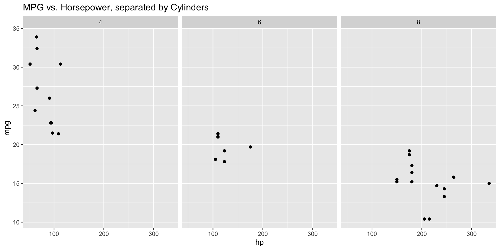
ggplot2 facet_grid()
We can even add another layer, facet_grid(), to break down our graph by both cylinder type and transmission type.
ggplot2 facet_grid()
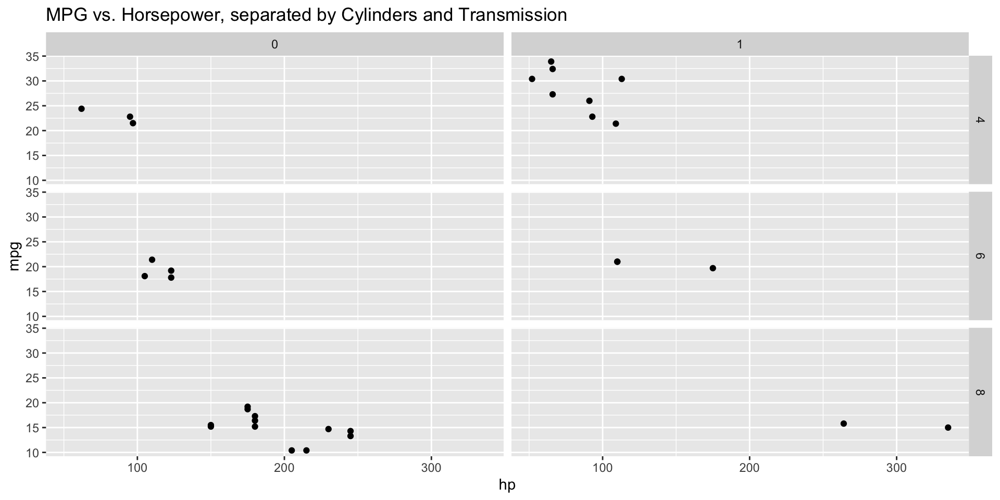
Making S*** Pretty
Themes
Themes control the non-data elements of a plot, like background colour, grid lines, and font styles.
You can add a theme as a new layer. ggplot2 comes with several built-in themes.
ggplot(mtcars, aes(x = hp, y = mpg)) + geom_point() + theme_bw()
Theme Example: theme_bw()
theme_bw() is the classic dark-on-light ggplot2 theme.
Theme Example: theme_bw()
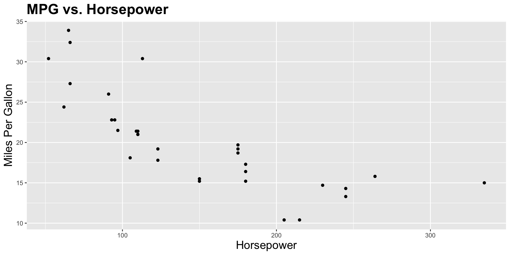
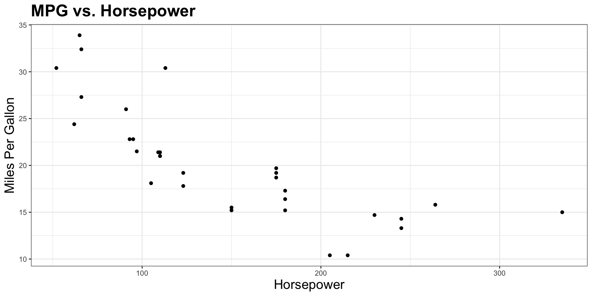
Theme Example: theme_classic()
theme_classic() is a classic-looking theme with x- and y-axis lines and no gridlines.
Theme Example: theme_classic()

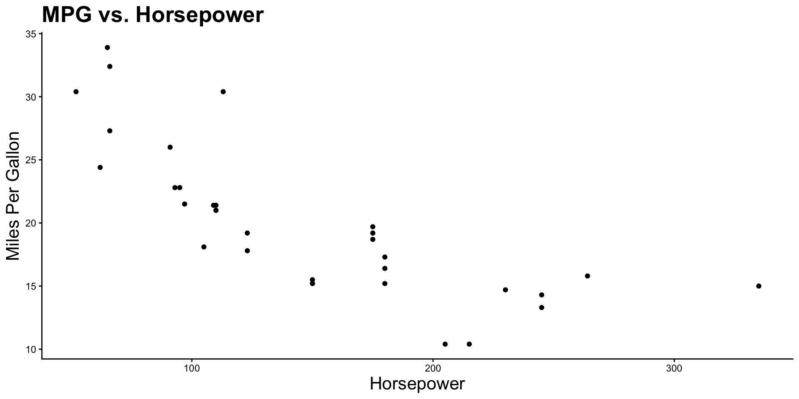
A More Complex Plot
Let’s combine what we’ve learned into a single, comprehensive plot. We want to end up with this:
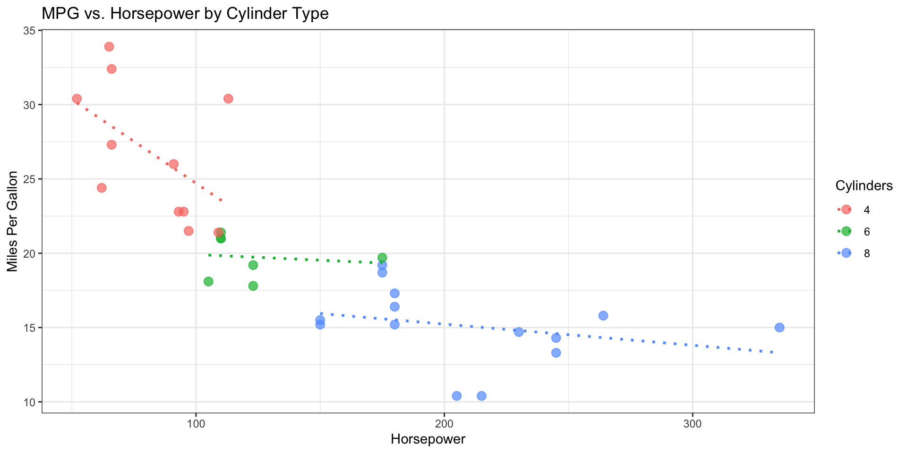
A More Complex Plot
We start with ggplot(), the base layer of the plot. We specify our data (mtcars), our x-axis variable (hp), our y-axis variable (mpg), and we assign a different colour to each unique cylinder (cyl) count.
A More Complex Plot
Next, we use geom_point() to tell ggplot2 we want a scatter plot. We can use alpha to set the transparency of the points (1 = fully opaque; 0 = fully transparent). We can change the size of the points (size) to make them bigger.
A More Complex Plot
In our next layer, we add a smoothing line. geom_smooth() calculates and draws a line of best fit between x and y for each colour group (cyl). lm specifies that we are using a linear model. Because color is mapped to cyl, ggplot2 will draw a separate line for each cylinder type.
se = FALSE removes the standard error (shaded gray confidence interval) around the smoothing line.
linetype = "dotted" changes the style of the line from solid to dotted.
A More Complex Plot
Next, we add a labelling layer using labs() to customise the plot’s labels.
By specifying color = "Cylinders", ggplot2 sets the title of the legend that was created automatically by mapping cyl to color in the aes() function.
A More Complex Plot
In our final layer, we specify the theme using the pre-built black and white theme, theme_bw()
A More Complex Plot
Running it all together…

ggplot2 Resources
- R for Data Science: The “Data Visualization” chapter provides an excellent introduction.
ggplot2themes: A list of complete themes
Give it a try
Work through this week’s worksheet, which can be found on Blackboard.
Anything you don’t finish, should be completed for homework.
Burr PSY6422